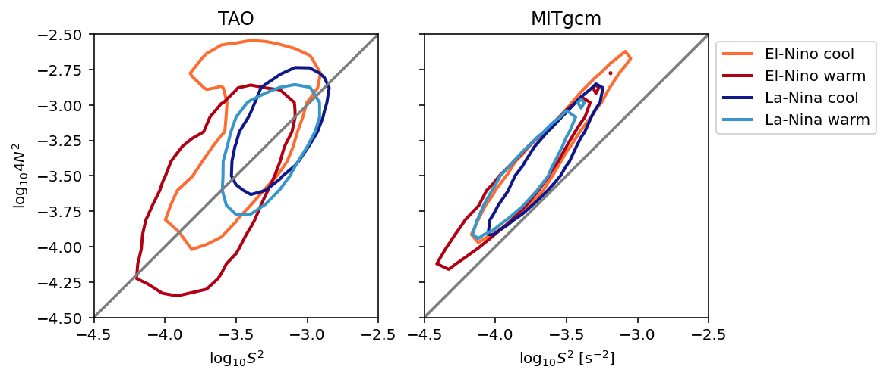
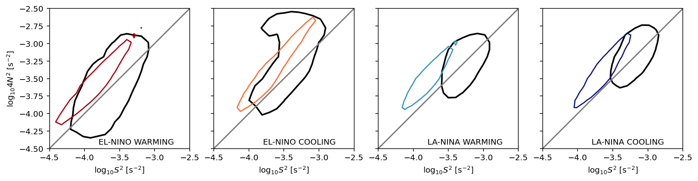
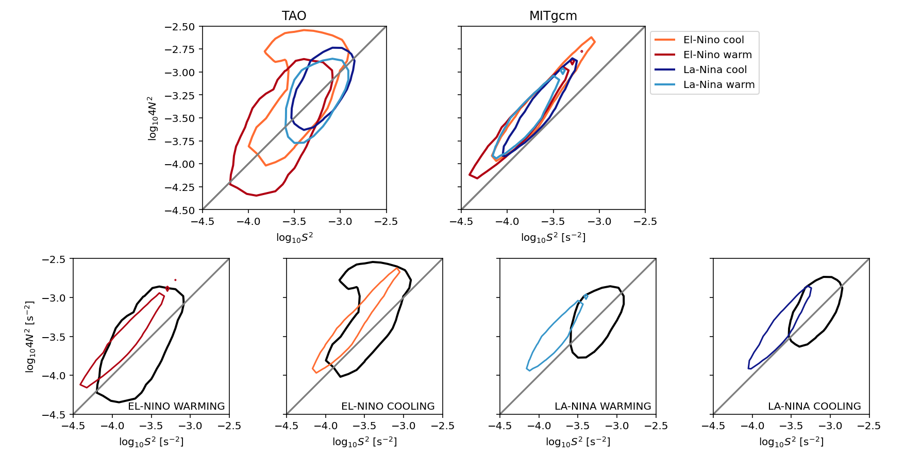
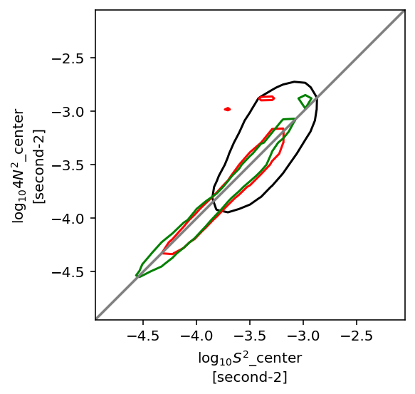

miχpods
Contents
miχpods#
test out hvplot
build LES catalog
bootstrap error on mean, median?
switch to daily data?
add TAO N2, Tz, S2
add TAO χpods
move enso_transition_mask to mixpods
References#
Warner & Moum (2019)
Setup#
%load_ext watermark
import os
import cf_xarray
import dask
import dcpy
import distributed
import flox.xarray
import hvplot.xarray
import matplotlib as mpl
import matplotlib.pyplot as plt
import numpy as np
import xarray as xr
import pump
from pump import mixpods
dask.config.set({"array.slicing.split_large_chunks": False})
mpl.rcParams["figure.dpi"] = 140
xr.set_options(keep_attrs=True)
gcmdir = "/glade/campaign/cgd/oce/people/bachman/TPOS_1_20_20_year/OUTPUT/" # MITgcm output directory
stationdirname = gcmdir
%watermark -iv
The watermark extension is already loaded. To reload it, use:
%reload_ext watermark
numpy : 1.22.4
dcpy : 0.1.dev360+g65bcf1a
xarray : 2022.6.0rc0
dask : 2022.6.1
flox : 0.5.8.dev1+gc387edc
sys : 3.10.5 | packaged by conda-forge | (main, Jun 14 2022, 07:04:59) [GCC 10.3.0]
hvplot : 0.8.0
distributed: 2022.6.1
pandas : 1.4.3
matplotlib : 3.5.2
pump : 0.1
json : 2.0.9
ipywidgets : 7.7.1
cf_xarray : 0.7.2
import ncar_jobqueue
if "client" in locals():
client.close()
del client
if "cluster" in locals():
cluster.close()
#env = {"OMP_NUM_THREADS": "3", "NUMBA_NUM_THREADS": "3"}
# cluster = distributed.LocalCluster(
# n_workers=8,
# threads_per_worker=1,
# env=env
# )
if "cluster" in locals():
del cluster
#cluster = ncar_jobqueue.NCARCluster(
# project="NCGD0011",
# scheduler_options=dict(dashboard_address=":9797"),
#)
# cluster = dask_jobqueue.PBSCluster(
# cores=9, processes=9, memory="108GB", walltime="02:00:00", project="NCGD0043",
# env_extra=env,
# )
import dask_jobqueue
cluster = dask_jobqueue.PBSCluster(
cores=1, # The number of cores you want
memory='23GB', # Amount of memory
processes=1, # How many processes
queue='casper', # The type of queue to utilize (/glade/u/apps/dav/opt/usr/bin/execcasper)
local_directory='$TMPDIR', # Use your local directory
resource_spec='select=1:ncpus=1:mem=23GB', # Specify resources
project='ncgd0011', # Input your project ID here
walltime='02:00:00', # Amount of wall time
interface='ib0', # Interface to use
)
cluster.scale(jobs=4)
/glade/u/home/dcherian/miniconda3/envs/pump/lib/python3.10/site-packages/distributed/node.py:180: UserWarning: Port 8787 is already in use.
Perhaps you already have a cluster running?
Hosting the HTTP server on port 45295 instead
warnings.warn(
client = distributed.Client(cluster)
client
Client
Client-94652f32-022d-11ed-b39a-3cecef1acbfa
| Connection method: Cluster object | Cluster type: dask_jobqueue.PBSCluster |
| Dashboard: https://jupyterhub.hpc.ucar.edu/stable/user/dcherian/proxy/45295/status |
Cluster Info
PBSCluster
b6b95583
| Dashboard: https://jupyterhub.hpc.ucar.edu/stable/user/dcherian/proxy/45295/status | Workers: 0 |
| Total threads: 0 | Total memory: 0 B |
Scheduler Info
Scheduler
Scheduler-6f660fea-a8ec-4606-9cb5-75541dfc4cfd
| Comm: tcp://10.12.206.63:39935 | Workers: 0 |
| Dashboard: https://jupyterhub.hpc.ucar.edu/stable/user/dcherian/proxy/45295/status | Total threads: 0 |
| Started: Just now | Total memory: 0 B |
Workers
import gsw_xarray
import dcpy
tao_gridded = (
xr.open_dataset(
os.path.expanduser("~/work/pump/zarrs/tao-gridded-ancillary.zarr"), chunks="auto", engine="zarr"
)
.sel(longitude=-140, time=slice("2005-Jun", "2015"))
)
tao_gridded["depth"].attrs["axis"] = "Z"
# eucmax exists
tao_gridded.coords["eucmax"] = pump.calc.get_euc_max(tao_gridded.u.reset_coords(drop=True), kind="data")
#pump.calc.calc_reduced_shear(tao_gridded)
tao_gridded.coords["enso_transition"] = pump.obs.make_enso_transition_mask().reindex(time=tao_gridded.time, method="nearest")
tao_gridded.u.cf.plot()
tao_gridded.eucmax.plot()
/glade/u/home/dcherian/miniconda3/envs/pump/lib/python3.10/site-packages/xarray/core/dataset.py:248: UserWarning: The specified Dask chunks separate the stored chunks along dimension "depth" starting at index 58. This could degrade performance. Instead, consider rechunking after loading.
warnings.warn(
/glade/u/home/dcherian/miniconda3/envs/pump/lib/python3.10/site-packages/xarray/core/dataset.py:248: UserWarning: The specified Dask chunks separate the stored chunks along dimension "time" starting at index 139586. This could degrade performance. Instead, consider rechunking after loading.
warnings.warn(
/glade/u/home/dcherian/miniconda3/envs/pump/lib/python3.10/site-packages/xarray/core/dataset.py:248: UserWarning: The specified Dask chunks separate the stored chunks along dimension "longitude" starting at index 2. This could degrade performance. Instead, consider rechunking after loading.
warnings.warn(
[<matplotlib.lines.Line2D at 0x2b36e2d9d030>]
tao_gridded = (
tao_gridded.update({
"n2s2pdf": mixpods.pdf_N2S2(
tao_gridded[["S2", "N2T"]].drop_vars(["shallowest", "zeuc"]).rename_vars({"N2T": "N2"})
).load()
}
)
)
tao_Ri = xr.load_dataarray("tao-hourly-Ri-seasonal-percentiles.nc").cf.guess_coord_axis()
metrics = pump.model.read_metrics(stationdirname)
stations = pump.model.read_stations_20(stationdirname)
mitgcm = stations.sel(latitude=0, longitude=-140.025, method="nearest")
#enso = pump.obs.make_enso_mask()
#mitgcm["enso"] = enso.reindex(time=mitgcm.time.data, method="nearest")
mitgcm["eucmax"] = pump.calc.get_euc_max(mitgcm.u)
metrics_ = xr.align(metrics, mitgcm.expand_dims(["latitude", "longitude"]), join="inner")[0].squeeze()
pump.calc.calc_reduced_shear(mitgcm)
mitgcm["enso_transition"] = pump.obs.make_enso_transition_mask().reindex(time=mitgcm.time.data, method="nearest")
mitgcm = mitgcm.update({"n2s2pdf": mixpods.pdf_N2S2(mitgcm).load()})
calc uz
calc vz
calc S2
calc N2
calc shred2
Calc Ri
simulations = {"MITgcm": mitgcm}
Remap to EUC coordinate#
import dcpy.interpolate
mitgcm.coords["zeuc"] = mitgcm.depth - mitgcm.eucmax
remapped = dcpy.interpolate.bin_to_new_coord(
mitgcm.drop_vars(["SSH", "KPPhbl", "mld", "eucmax"]),
"depth",
"zeuc" ,
np.arange(-250, 250.1, 5)
)
remapped["zeuc"].attrs["axis"] = "Z"
remapped["zeuc"].attrs["units"] = "m"
Seasonal median Ri: (0, 140)#
remapped.Ri.load()
/glade/u/home/dcherian/miniconda3/envs/pump/lib/python3.10/site-packages/dask/core.py:119: RuntimeWarning: invalid value encountered in true_divide
return func(*(_execute_task(a, cache) for a in args))
<xarray.DataArray 'Ri' (time: 174000, zeuc: 100)>
array([[ nan, nan, 13.2201328 , ..., nan,
nan, nan],
[ nan, nan, 12.79707004, ..., nan,
nan, nan],
[ nan, nan, 12.37860733, ..., nan,
nan, nan],
...,
[ nan, 12.28814309, nan, ..., nan,
nan, nan],
[ nan, 12.97124095, nan, ..., nan,
nan, nan],
[ nan, 13.60744073, nan, ..., nan,
nan, nan]])
Coordinates:
latitude float64 0.025
longitude float64 -140.0
* time (time) datetime64[ns] 1998-12-31T18:00:00 ... 2018-11-06T17:00:00
* zeuc (zeuc) float64 -247.5 -242.5 -237.5 -232.5 ... 237.5 242.5 247.5
Attributes:
long_name: Ri
units: fg = (
remapped.Ri.groupby("time.season").median()
.reindex(season=["DJF", "MAM", "JJA", "SON"])
.cf.plot(col="season", xlim=(0, 2), ylim=(-20, None), label="MITgcm")
)
fg.data = tao_Ri.cf.sel(quantile=0.5, longitude=-140)
fg.map_dataarray_line(xr.plot.line, x=None, y="zeuc", hue="season", color='k', label="TAO")
fg.map(lambda: plt.axvline(0.25))
fg.axes[-1, -1].legend()
/glade/u/home/dcherian/miniconda3/envs/pump/lib/python3.10/site-packages/dask/core.py:119: RuntimeWarning: invalid value encountered in true_divide
return func(*(_execute_task(a, cache) for a in args))
/glade/u/home/dcherian/miniconda3/envs/pump/lib/python3.10/site-packages/numpy/lib/nanfunctions.py:1096: RuntimeWarning: All-NaN slice encountered
result = np.apply_along_axis(_nanmedian1d, axis, a, overwrite_input)
<matplotlib.legend.Legend at 0x2affcb943460>
Stability diagram: N2-S2 plane#
Warner & Moum (2019):
Both velocity and temperature are hourly averaged before interpolation to 5-m vertical bins
All data#
Stability Diagram#
mixpods.plot_stability_diagram_by_dataset(tao_gridded, simulations)

mixpods.plot_stability_diagram_by_phase(tao_gridded, simulations, fig=None)

fig = plt.figure(constrained_layout=True, figsize=(12, 6))
subfigs = fig.subfigures(2, 1, height_ratios=[1.2, 1])
top = subfigs[0].subfigures(1, 3, width_ratios=[1, 5, 1])
plot_stability_diagram_by_dataset(tao_gridded, simulations, fig=top[1])
plot_stability_diagram_by_phase(tao_gridded, simulations, fig=subfigs[1])

(
tao_gridded.n2s2pdf
.sel(enso_transition_phase=["La-Nina cool", "La-Nina warm", "El-Nino warm", "El-Nino cool"])
.sum("N2_bins")
.plot(hue="enso_transition_phase")
)
plt.figure()
(
tao_gridded.n2s2pdf
.sel(enso_transition_phase=["La-Nina cool", "La-Nina warm", "El-Nino warm", "El-Nino cool"])
.sum("S2_bins")
.plot(hue="enso_transition_phase")
)
[<matplotlib.lines.Line2D at 0x2b36e2bc2ad0>,
<matplotlib.lines.Line2D at 0x2b36e2bc32e0>,
<matplotlib.lines.Line2D at 0x2b36e2bc3310>,
<matplotlib.lines.Line2D at 0x2b36e0ca52d0>]
oni = pump.obs.process_oni().sel(time=slice("2005-Oct", "2015"))
(
oni.hvplot.step(color='k')
+ pump.obs.make_enso_transition_mask().sel(time=slice("2005-Jun", "2015")).reset_coords(drop=True).hvplot.step()
).cols(1)
Seasonal mean heat flux#
remapped.Jq.load()
<xarray.DataArray 'Jq' (time: 174000, zeuc: 100)>
array([[ nan, nan, -0.07841657, ..., nan,
nan, nan],
[ nan, nan, -0.07973828, ..., nan,
nan, nan],
[ nan, nan, -0.08094554, ..., nan,
nan, nan],
...,
[ nan, -0.07447129, nan, ..., nan,
nan, nan],
[ nan, -0.07471326, nan, ..., nan,
nan, nan],
[ nan, -0.07509062, nan, ..., nan,
nan, nan]])
Coordinates:
latitude float64 0.025
longitude float64 -140.0
* time (time) datetime64[ns] 1998-12-31T18:00:00 ... 2018-11-06T17:00:00
* zeuc (zeuc) float64 -247.5 -242.5 -237.5 -232.5 ... 237.5 242.5 247.5import hvplot.xarray
(
remapped.Jq.groupby("time.season").mean()
.reindex(season=["DJF", "MAM", "JJA", "SON"])
.cf.plot.line(col="season")
)
<xarray.plot.facetgrid.FacetGrid at 0x2affc38316c0>
LES#
may = pump.les.read_les_file(
"../datasets/les_post_process/ROMS_PSH_3HRLIN_242_602_360x360x288_25MAY1985_24NOV2021.nc"
)
may
<xarray.Dataset>
Dimensions: (z: 288, time: 1313)
Coordinates:
* z (z) float64 -143.5 -143.0 -142.5 -142.0 ... -1.5 -1.0 -0.5 0.0
* time (time) datetime64[ns] 1985-05-25T03:00:00 ... 1985-05-30T00...
alpha float64 ...
beta float64 ...
T0 float64 ...
S0 float64 ...
dz float64 0.5
Data variables: (12/67)
ume (time, z) float32 ...
vme (time, z) float32 ...
tempme (time, z) float32 ...
saltme (time, z) float32 ...
urms (time, z) float32 ...
vrms (time, z) float32 ...
... ...
chi (time, z) float32 2.227e-08 -2.505e-10 ... 1.66e-08 nan
tke (time, z) float32 4.914e-12 4.067e-12 ... 0.0003075 nan
Rif (time, z) float64 nan nan nan nan nan ... nan nan nan nan nan
Reb (time, z) float32 nan 0.01892 0.01975 0.02009 ... nan nan nan
Jq (time, z) float64 -31.12 0.3899 0.3944 ... -23.48 -117.2 nan
eucmax (time) float64 -95.0 -95.0 -95.0 -95.0 ... -92.5 -92.5 -92.5
Attributes:
type: DIABLO LES, processed means
title: ROMS_PSH_6HRLIN_0N140W_360x360x288_5OCT2021
history: Tue Dec 28 09:09:16 2021: ncatted -O -a units,time,m,c,seconds ...
NCO: netCDF Operators version 4.9.5 (Homepage = http://nco.sf.net, C...octo = pump.les.read_les_file(
"../datasets/les_post_process/ROMS_PSH_6HRLIN_0N140W_360x360x216_22OCT2020.nc"
)
octo
<xarray.Dataset>
Dimensions: (z: 216, time: 8774)
Coordinates:
* z (z) float64 -107.5 -107.0 -106.5 -106.0 ... -1.5 -1.0 -0.5 0.0
* time (time) datetime64[ns] 1985-10-02T06:00:00 ... 1985-11-05T20...
alpha float64 ...
beta float64 ...
T0 float64 ...
S0 float64 ...
dz float64 0.5
Data variables: (12/67)
ume (time, z) float32 ...
vme (time, z) float32 ...
tempme (time, z) float32 ...
saltme (time, z) float32 ...
urms (time, z) float32 ...
vrms (time, z) float32 ...
... ...
chi (time, z) float32 1.062e-08 -6.989e-10 ... -2.423e-07 nan
tke (time, z) float32 4.914e-08 4.067e-08 ... 0.0001316 nan
Rif (time, z) float64 nan nan nan nan nan ... nan nan nan nan nan
Reb (time, z) float32 nan 8.843 9.495 9.885 ... nan nan nan nan
Jq (time, z) float64 -11.26 0.6191 0.5909 ... -12.06 -79.09 nan
eucmax (time) float64 nan nan nan nan ... -104.0 -104.0 -104.0 -104.0
Attributes:
type: DIABLO LES, processed means
title: ROMS_PSH_6HRLIN_0N140W_360x360x216_22OCT2020may["n2s2pdf"] = mixpods.pdf_N2S2(may)
octo["n2s2pdf"] = mixpods.pdf_N2S2(octo)
/glade/u/home/dcherian/miniconda3/envs/pump/lib/python3.10/site-packages/xarray/core/computation.py:771: RuntimeWarning: invalid value encountered in log10
result_data = func(*input_data)
/glade/u/home/dcherian/miniconda3/envs/pump/lib/python3.10/site-packages/xarray/core/computation.py:771: RuntimeWarning: invalid value encountered in log10
result_data = func(*input_data)
for ds, color in zip([tao_gridded, octo, may], ["k", "r", "g"]):
plot_n2s2pdf(ds.n2s2pdf.sel(enso_transition_phase="none"), colors=color, targets=0.5, pcolor=False)
